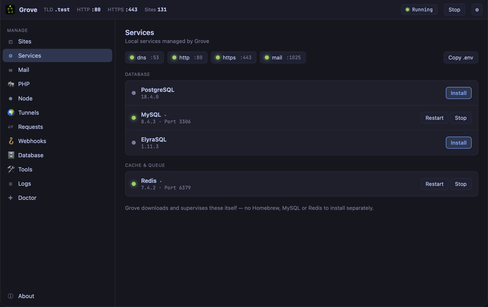

Chapter 6: The Rest of the Stack
A database, a cache and somewhere for outgoing mail to land. This chapter is about not installing any of them yourself, and about the small command that ends the most tedious ten minutes of starting a project.
The problem
Backing services are where local environments rot. A
Homebrew MySQL upgraded itself during an unrelated
brew upgrade and now refuses to start on your
old data directory. A Docker Postgres eats eight gigabytes
of disk and a fan-spinning share of your battery for a
database with four tables in it. Redis was installed for a
project you finished last year and is still running.
Nothing is wrong with any of these tools. The problem is that nothing owns them. They were installed by different mechanisms at different times and no single thing knows what is meant to be running, at which version, on which port.
Services Grove owns

grove service list
grove service install postgres
grove service start postgres
Grove downloads and supervises PostgreSQL, MySQL,
ElyraSQL and Redis itself — the line under the panel
says it plainly: no Homebrew, MySQL or Redis to
install separately. They start when Grove starts,
stop when it stops, and grove doctor knows
whether they are healthy.
And because Grove owns them, it can do things a service you installed yourself cannot — which is chapter 9, and is the strongest argument in this chapter.
One of those things arrived in 1.9.0. A database you use twice a week still costs its memory all week, so it can now run only while something is connected:
grove service on-demand mysql onGrove holds the port. The server starts behind the first connection and stops cleanly after ten idle minutes by default. Measured on the machine that wrote this, an idle MySQL at 517 MB went to nothing, and the first query after it had stopped was answered in 0.35 s including the start. It is opt-in: nothing about an existing service changes until you turn it on.
The ten tedious minutes, ended
Every new project starts the same way: open
.env, try to remember the port, get the
password wrong, find the mail settings from an old
project, run the migration, get a connection error, look
up what the socket path is this time.
grove envDB_CONNECTION=pgsql
DB_HOST=127.0.0.1
DB_PORT=5432
DB_DATABASE=grove
DB_USERNAME=grove
DB_PASSWORD=
REDIS_HOST=127.0.0.1
REDIS_PORT=6379
MAIL_MAILER=smtp
MAIL_HOST=127.0.0.1
MAIL_PORT=1025Paste it in. It is correct because Grove is the thing running the services, so it is reading its own configuration rather than reciting a convention. The GUI has the same thing behind Copy .env.
Mail that never leaves the building
Note the last three lines. Grove runs a mail-catcher on
127.0.0.1:1025, and everything your apps send
is captured, never delivered.
grove mail# FROM TO SUBJECT RECEIVED
1 hello@freddy.test you@example.com Welcome aboard! 12:04:31This is a safety feature more than a convenience. Every developer who has been doing this a while knows somebody who sent a test run of a welcome sequence to a production user table — or was that somebody. With mail pointed at 1025 from the first commit, the accident is structurally impossible on this machine, and you also get to read the HTML your mailer actually produced instead of imagining it.
Which database
Use whichever your production runs. Local development that differs from production in the database is how you find out about a dialect difference during a deploy.
ElyraSQL is worth a note since it is
newer: a MySQL-compatible server in one static binary,
with the whole database in a single file. It speaks the
MySQL protocol, so an app connects to it with
DB_CONNECTION=mysql and no code changes. The
single file is the interesting part — it makes the
snapshots in chapter 9 a copy of one file rather than a
dump and restore.
What you learned
- Grove installs and supervises its own databases, cache and mail — one thing owns them, at a known version, on a known port.
- grove env writes the .env block from what is actually running rather than from memory.
- Mail is captured, never delivered. The worst accident in local development becomes structurally impossible.
- Match production's database. A dialect difference found during a deploy is a bad way to learn one.
- Herd's databases can be copied over with the source left untouched, as long as the ports differ.